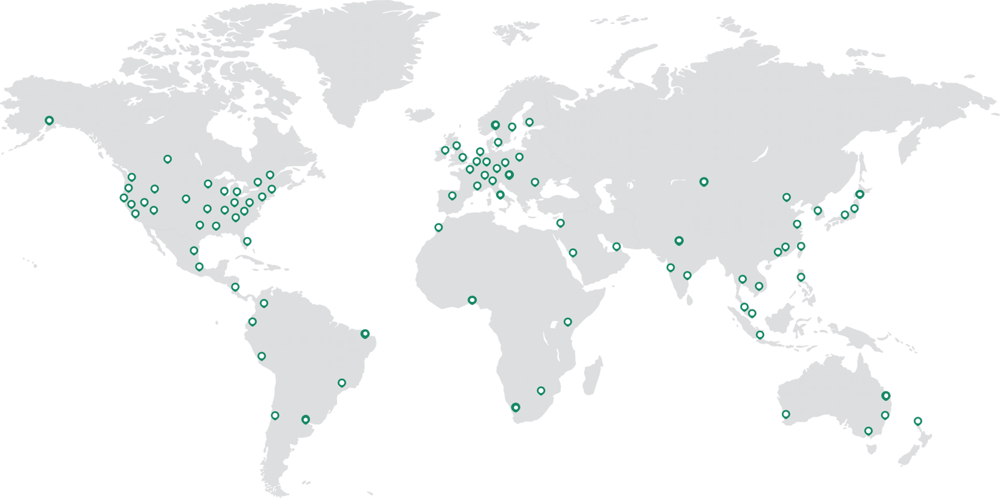

Why this matters
M&A is where network agility gets tested in public. Every acquisition arrives with its own estate — MPLS contracts, firewalls, VPN concentrators, a separate directory — and the value of the deal depends on how quickly the two organisations can genuinely work together. Integration measured in quarters is integration the business notices.
The objective: move from “MPLS-to-anything” legacy plumbing to an elegant, future-proof design — a converged platform that unifies and simplifies the target operating model, so each new acquisition is an onboarding exercise, not a network project. Bring off-net sites on-net, deploy with ease and at scale, and decrease operational time-to-value.
Why M&A network integration drags
The legacy integration project
- New circuits or MPLS contract novations before anything moves
- Site-to-site VPN meshes bolted between two firewall estates
- Hardware refresh and hands-on engineering at every acquired site
- Two security stacks, two policy models, months of parallel run
The identity gap
- Two directories with no common policy language between them
- Acquired users waiting on directory trusts — or sharing VPN accounts
- Network policy written in IP ranges, blind to who is connecting
- No per-user visibility or audit trail across the combined estate
“When you last acquired a company, how long did it take before their users could reach your applications under your security policy — and what did you compromise on to get there?”
Acquired sites on-net in days, identities in policy on day one
Everything Cato needs to onboard a site is an API call. Define the acquired sites as code — Terraform against the Cato GraphQL API — and the sites, their ranges and their locations exist in the account in minutes. Ship a Socket to each site; it connects to the nearest PoP and the acquired estate joins the same global network, under the same converged security policy, as London DC and the HQ lab site. In parallel, Entra ID integration provisions the acquired users and groups, so policy can name them immediately — no directory trust project required.
Deploy with ease and at scale via the Cato API
Define x sites as code and create them in one Terraform run. Sockets are zero-touch: ship, plug in, and each site joins the backbone — no engineer on a plane.
Entra ID for provisioning and identity awareness
Connect the acquired company's Entra ID tenant and its users and groups are provisioned into Cato automatically — identity awareness across the combined estate.
Usernames in network policy immediately
WAN firewall rules reference acquired users and groups by name from day one — least-privileged access during integration, without waiting for directory trusts.
Decrease operational time-to-value
No circuit orders, no firewall meshes, no appliance builds. One converged platform simplifies the target operating model — and the next acquisition is just as fast.

How to run the demo
Ask about the most recent acquisition (or divestiture): how long did network integration take, and what did it cost in people and circuits? Run the demo as a replay of that deal done the Cato way.
-
Frame the scenario
The acquisition closed on Friday. The goal: acquired sites on-net and acquired users reaching corporate apps — under your policy, visible by name — within days. Everything that follows is driven from a couple of files and one directory integration.
-
Create the site details file
Show the site definitions — one block per acquired site (or a CSV fed into
for_eachfor larger deals). Name, connection type, network range, location: that is all the Cato API needs.# sites.tf — one resource per acquired site resource "cato_socket_site" "leeds" { name = "ACQ-Leeds Office" site_type = "BRANCH" connection_type = "SOCKET_X1500" native_range = { native_network_range = "10.60.1.0/24" local_ip = "10.60.1.1" } site_location = { country_code = "GB" timezone = "Europe/London" } }
-
Run Terraform
Administration → API & Integrations
Show where the API key lives, then run
terraform apply. The plan lists every acquired site; the GraphQL API creates them in seconds. Point out this is the same workflow whether the deal brings three sites or three hundred. -
Confirm site creation in CMA
Monitor → Topology
The new sites appear in the topology alongside London DC and the HQ lab site. Explain the physical step: Sockets ship to site, anyone plugs them in, and zero-touch provisioning brings each site up on the nearest PoP.
-
Show Entra-provisioned users
Access → Users
Show users and groups synced from the acquired company's Entra ID tenant — provisioned automatically, no manual account creation. Pick a user (say “Priya” from the acquired side) to carry through the next step.
-
Use the acquired group in a WAN firewall rule
Security → WAN Firewall
Open (or build live) a rule with the Entra-provisioned acquired-company group as the source and the London DC application ranges as the destination. The close: identity-aware, least-privileged access for the acquired workforce, written by name, on day one — and every allow and block attributed to a username in Monitor → Events.